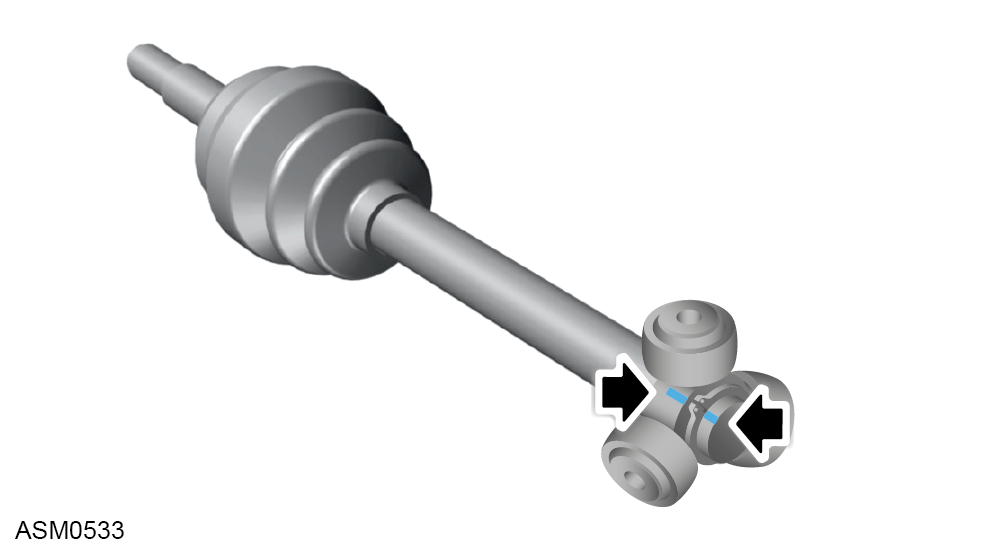
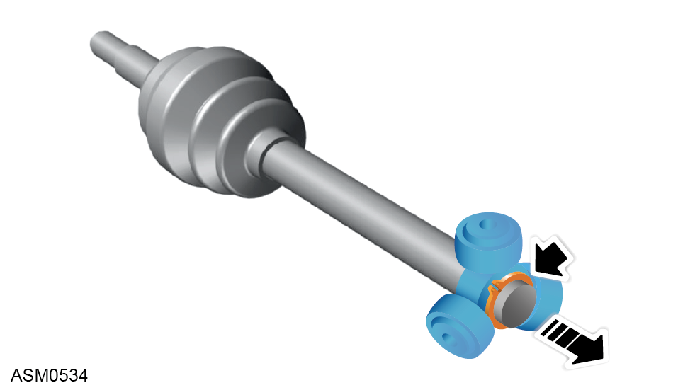

Driveshaft Assembly - Left Side - V6
Print
Operation Code: 47.15.01-02
Removal
- Remove rear undertray. Refer to procedure.
- Remove left side rear hub carrier. Refer to procedure.
- Disconnect electrical connector from gearbox.
- Remove oil sensor and drain gearbox oil.
- Release driveshaft from gearbox.
 CAUTION: Take care not to damage dust cover ring on the driveshaft.
CAUTION: Take care not to damage dust cover ring on the driveshaft.
CAUTION: Take care not to damage the gearbox oil seal to prevent leaks.
NOTE: Use a suitable container to collect any gearbox oil spillage.
- Remove driveshaft from vehicle.
Do not carry out further disassembly if removing for access only.
- Remove clips (x2) securing inboard constant velocity (CV) joint gaiter to driveshaft and remove or pull away gaiter.
CAUTION: Take care not to damage the CV gaiter if it is to be reused.
- Match mark driveshaft and CV joint outer body.
- Remove CV joint outer body.

- Match mark driveshaft and CV joint spider.

- Remove snap ring from end of driveshaft and remove CV joint spider.
- Remove clips (x2) securing CV joint gaiter to driveshaft and remove or pull gaiter away from CV joint.
- Clean CV joint spider and degrease using suitable solvent.
NOTE: Inspect condition of grease for contamination before cleaning.
NOTE: Inspect the spider bearings for any significant wear within the driving surface. Discard and replace if necessary.
Installation
- Installation is the reverse of removal procedure except for the following:
- Pack CV joint spider with grease.
NOTE: Use supplied grease type NKG302.
NOTE: Use all grease suppled for the respective joint.
- Apply grease to inboard driveshaft splines before installation.
CAUTION: Take care when installing driveshaft into gearbox to not damage the snap ring.
NOTE: Applying grease will keep the snap ring in place, aiding in installation.
- Release hose clamp securing gearbox oil cooler hose to gearbox fill point.
- Remove hose and allow oil to drain.
- Use Lotus Insight tool to actuate oil cooler pump until no more oil flows.
- Leave system undisturbed for 5 minutes.
- Refill transmission oil.
NOTE: The transmission oil is full when oil begins to flow from the fill point.
- Check manual transmission oil level. Refer to procedure.
- Check automatic transmission oil level. Refer to procedure.